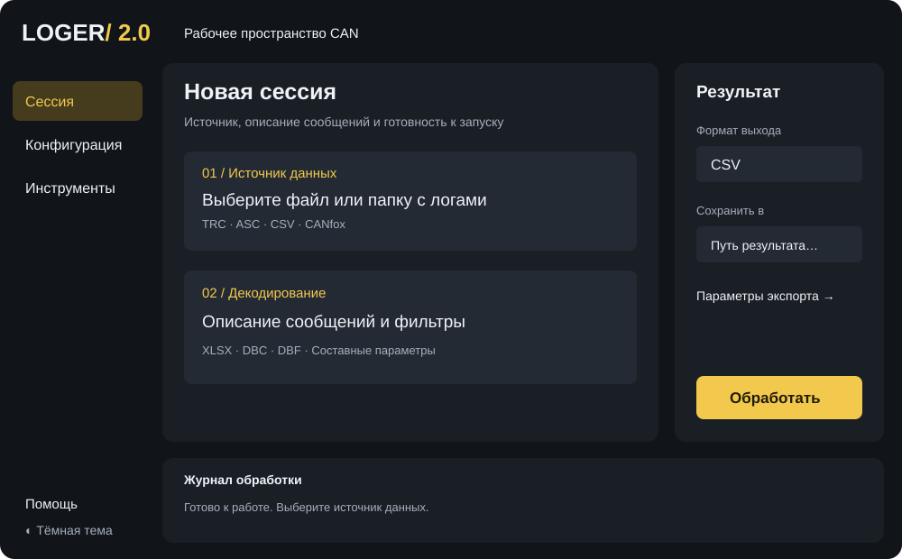
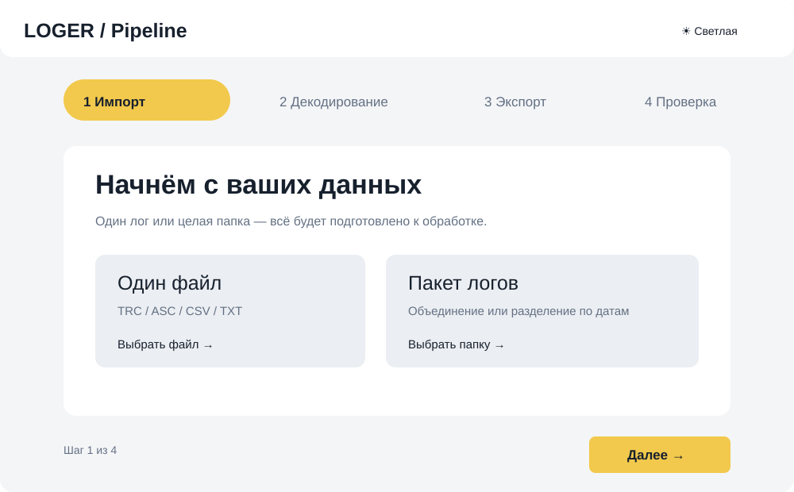
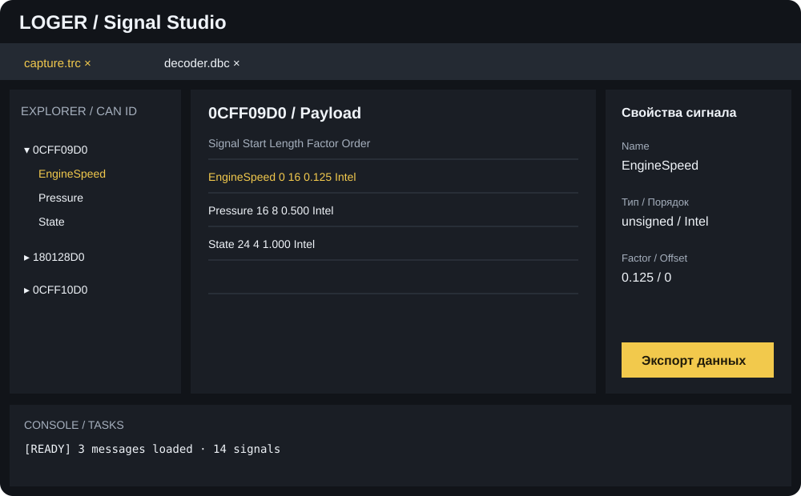

Три самостоятельные архитектуры работы с CAN-логами. Это прототипы композиции; реализация desktop-приложения сохраняет реальные обработчики и форматы данных.
Постоянные навигация, результат и журнал. Отдельное пространство для источника, конфигурации и инструментов. Быстрый запуск доступен с любой страницы.

Пошаговый мастер с горизонтальными стадиями. Просторный экран для каждого этапа: импорт, описание сигналов, параметры выхода, проверка.

Документные вкладки и плотная лаборатория сигналов. Explorer CAN ID, таблица payload и inspector выбранного сигнала.
